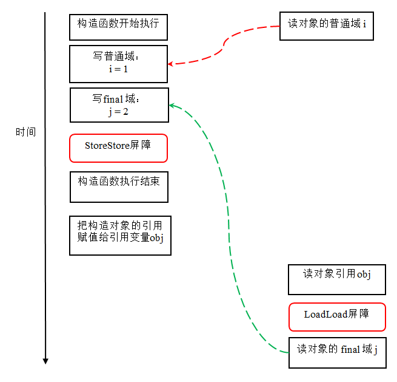

与前面介绍的锁和volatile相比较，对final域的读和写更像是普通的变量访问。对于final域，编译器和处理器要遵守两个重排序规则：
- 在构造函数内对一个final域的写入，与随后把这个被构造对象的引用赋值给一个引用变量，这两个操作之间不能重排序。
- 初次读一个包含final域的对象的引用，与随后初次读这个final域，这两个操作之间不能重排序。
下面，我们通过一些示例性的代码来分别说明这两个规则：
public class FinalExample {
int i; //普通变量
final int j; //final变量
static FinalExample obj;
public void FinalExample () { //构造函数
i = 1; //写普通域
j = 2; //写final域
}
public static void writer () { //写线程A执行
obj = new FinalExample ();
}
public static void reader () { //读线程B执行
FinalExample object = obj; //读对象引用
int a = object.i; //读普通域
int b = object.j; //读final域
}
}
这里假设一个线程A执行writer ()方法，随后另一个线程B执行reader ()方法。下面我们通过这两个线程的交互来说明这两个规则。
写final域的重排序规则
写final域的重排序规则禁止把final域的写重排序到构造函数之外。这个规则的实现包含下面2个方面：
- JMM禁止编译器把final域的写重排序到构造函数之外。
- 编译器会在final域的写之后，构造函数return之前，插入一个StoreStore屏障。这个屏障禁止处理器把final域的写重排序到构造函数之外。
现在让我们分析writer ()方法。writer ()方法只包含一行代码：finalExample = new FinalExample ()。这行代码包含两个步骤：
- 构造一个FinalExample类型的对象；
- 把这个对象的引用赋值给引用变量obj。
假设线程B读对象引用与读对象的成员域之间没有重排序（马上会说明为什么需要这个假设），下图是一种可能的执行时序：

在上图中，写普通域的操作被编译器重排序到了构造函数之外，读线程B错误的读取了普通变量i初始化之前的值。而写final域的操作，被写final域的重排序规则“限定”在了构造函数之内，读线程B正确的读取了final变量初始化之后的值。
写final域的重排序规则可以确保：在对象引用为任意线程可见之前，对象的final域已经被正确初始化过了，而普通域不具有这个保障。以上图为例，在读线程B“看到”对象引用obj时，很可能obj对象还没有构造完成（对普通域i的写操作被重排序到构造函数外，此时初始值2还没有写入普通域i）。
读final域的重排序规则
读final域的重排序规则如下：
- 在一个线程中，初次读对象引用与初次读该对象包含的final域，JMM禁止处理器重排序这两个操作（注意，这个规则仅仅针对处理器）。编译器会在读final域操作的前面插入一个LoadLoad屏障。
初次读对象引用与初次读该对象包含的final域，这两个操作之间存在间接依赖关系。由于编译器遵守间接依赖关系，因此编译器不会重排序这两个操作。大多数处理器也会遵守间接依赖，大多数处理器也不会重排序这两个操作。但有少数处理器允许对存在间接依赖关系的操作做重排序（比如alpha处理器），这个规则就是专门用来针对这种处理器。
reader()方法包含三个操作：
- 初次读引用变量obj;
- 初次读引用变量obj指向对象的普通域j。
- 初次读引用变量obj指向对象的final域i。
现在我们假设写线程A没有发生任何重排序，同时程序在不遵守间接依赖的处理器上执行，下面是一种可能的执行时序：

在上图中，读对象的普通域的操作被处理器重排序到读对象引用之前。读普通域时，该域还没有被写线程A写入，这是一个错误的读取操作。而读final域的重排序规则会把读对象final域的操作“限定”在读对象引用之后，此时该final域已经被A线程初始化过了，这是一个正确的读取操作。
读final域的重排序规则可以确保：在读一个对象的final域之前，一定会先读包含这个final域的对象的引用。在这个示例程序中，如果该引用不为null，那么引用对象的final域一定已经被A线程初始化过了。
如果final域是引用类型
上面我们看到的final域是基础数据类型，下面让我们看看如果final域是引用类型，将会有什么效果？
请看下列示例代码：
public class FinalReferenceExample {
final int[] intArray; //final是引用类型
static FinalReferenceExample obj;
public FinalReferenceExample () { //构造函数
intArray = new int[1]; //1
intArray[0] = 1; //2
}
public static void writerOne () { //写线程A执行
obj = new FinalReferenceExample (); //3
}
public static void writerTwo () { //写线程B执行
obj.intArray[0] = 2; //4
}
public static void reader () { //读线程C执行
if (obj != null) { //5
int temp1 = obj.intArray[0]; //6
}
}
}
这里final域为一个引用类型，它引用一个int型的数组对象。对于引用类型，写final域的重排序规则对编译器和处理器增加了如下约束：
- 在构造函数内对一个final引用的对象的成员域的写入，与随后在构造函数外把这个被构造对象的引用赋值给一个引用变量，这两个操作之间不能重排序。
对上面的示例程序，我们假设首先线程A执行writerOne()方法，执行完后线程B执行writerTwo()方法，执行完后线程C执行reader ()方法。下面是一种可能的线程执行时序：

在上图中，1是对final域的写入，2是对这个final域引用的对象的成员域的写入，3是把被构造的对象的引用赋值给某个引用变量。这里除了前面提到的1不能和3重排序外，2和3也不能重排序。
JMM可以确保读线程C至少能看到写线程A在构造函数中对final引用对象的成员域的写入。即C至少能看到数组下标0的值为1。而写线程B对数组元素的写入，读线程C可能看的到，也可能看不到。JMM不保证线程B的写入对读线程C可见，因为写线程B和读线程C之间存在数据竞争，此时的执行结果不可预知。
如果想要确保读线程C看到写线程B对数组元素的写入，写线程B和读线程C之间需要使用同步原语（lock或volatile）来确保内存可见性。
为什么final引用不能从构造函数内“逸出”
前面我们提到过，写final域的重排序规则可以确保：在引用变量为任意线程可见之前，该引用变量指向的对象的final域已经在构造函数中被正确初始化过了。其实要得到这个效果，还需要一个保证：在构造函数内部，不能让这个被构造对象的引用为其他线程可见，也就是对象引用不能在构造函数中“逸出”。为了说明问题，让我们来看下面示例代码：
public class FinalReferenceEscapeExample {
final int i;
static FinalReferenceEscapeExample obj;
public FinalReferenceEscapeExample () {
i = 1; //1写final域
obj = this; //2 this引用在此“逸出”
}
public static void writer() {
new FinalReferenceEscapeExample ();
}
public static void reader {
if (obj != null) { //3
int temp = obj.i; //4
}
}
}
假设一个线程A执行writer()方法，另一个线程B执行reader()方法。这里的操作2使得对象还未完成构造前就为线程B可见。即使这里的操作2是构造函数的最后一步，且即使在程序中操作2排在操作1后面，执行read()方法的线程仍然可能无法看到final域被初始化后的值，因为这里的操作1和操作2之间可能被重排序。实际的执行时序可能如下图所示：

从上图我们可以看出：在构造函数返回前，被构造对象的引用不能为其他线程可见，因为此时的final域可能还没有被初始化。在构造函数返回后，任意线程都将保证能看到final域正确初始化之后的值。
final语义在处理器中的实现
现在我们以x86处理器为例，说明final语义在处理器中的具体实现。
上面我们提到，写final域的重排序规则会要求译编器在final域的写之后，构造函数return之前，插入一个StoreStore障屏。读final域的重排序规则要求编译器在读final域的操作前面插入一个LoadLoad屏障。
由于x86处理器不会对写-写操作做重排序，所以在x86处理器中，写final域需要的StoreStore障屏会被省略掉。同样，由于x86处理器不会对存在间接依赖关系的操作做重排序，所以在x86处理器中，读final域需要的LoadLoad屏障也会被省略掉。也就是说在x86处理器中，final域的读/写不会插入任何内存屏障！
JSR-133为什么要增强final的语义
在旧的Java内存模型中 ，最严重的一个缺陷就是线程可能看到final域的值会改变。比如，一个线程当前看到一个整形final域的值为0（还未初始化之前的默认值），过一段时间之后这个线程再去读这个final域的值时，却发现值变为了1（被某个线程初始化之后的值）。最常见的例子就是在旧的Java内存模型中，String的值可能会改变（参考文献2中有一个具体的例子，感兴趣的读者可以自行参考，这里就不赘述了）。
为了修补这个漏洞，JSR-133专家组增强了final的语义。通过为final域增加写和读重排序规则，可以为java程序员提供初始化安全保证：只要对象是正确构造的（被构造对象的引用在构造函数中没有“逸出”），那么不需要使用同步（指lock和volatile的使用），就可以保证任意线程都能看到这个final域在构造函数中被初始化之后的值。